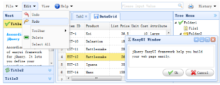

特点
基本概念:
jQuery EasyUI为提供了大多数UI控件的使用
例如:accordion，combobox，menu，dialog，tabs，validatebox，datagrid，window，tree等等
jQuery EasyUI是基于JQuery的一个前台ui界面的插件,相对于extjs更轻量

jquery easyui特点总结:
1.基于jquery用户界面插件的集合
2.为一些当前用于交互的js应用提供必要的功能
3.EasyUI支持两种渲染方式分别为javascript方式（如：$('#p').panel({...})）
html标记方式（如：class="easyui-panel"）
4.支持HTML5（通过data-options属性）
5.开发产品时可节省时间和资源
6.简单，但很强大
7.支持扩展，可根据自己的需求扩展控件